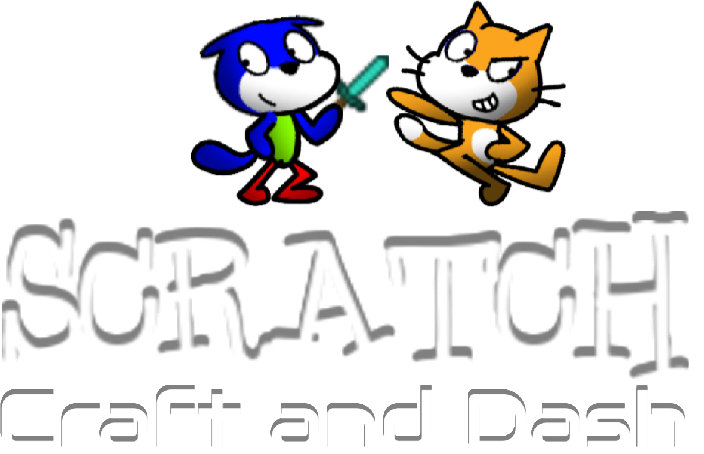

Scratch Craft and Dash is an joke endless runner game...
with mini-games.
That's it.
Main Links:
The Game
About
404 Error
Mini-games:
Catch The Apples
Scratchling Garden
© 2020, 2022, CharlesCatYT, MarioYoshi7. All rights reserved.